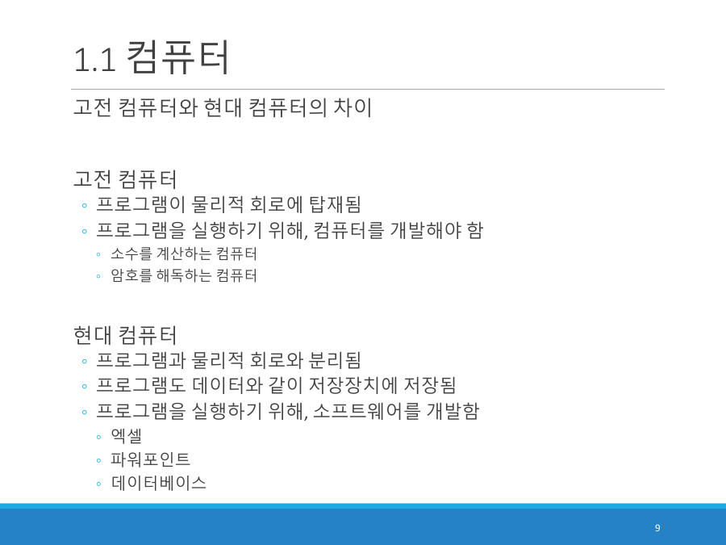

계산기와 컴퓨터는 뭐가 다를까요
계산기도 계산을 하는데 왜 컴퓨터라고 부르지 않을까요? 이유는 프로그램을 실행할 수 있느냐예요. 계산기는 2+3이나 (5+13)*7 같은 단순 계산만 해요. 컴퓨터는 프로그램만 바꿔 주면 "10000 이하의 모든 소수 나열"이나 "ChatGPT 학습"까지 해요.
프로그램(program) = 큰 계산 문제를 풀기 위해 순서대로 나열한 작은 계산 명령들. 강의자료 요약으로는 "컴퓨터가 수행해야 할 작업을 일련의 명령어들로 나열한 작업 명세서"예요.
교수님은 프로그램을 "계산 시나리오"(대본)라고 불렀어요. 대본이 있어야 배우가 연기를 하듯, 프로그램이 있어야 CPU가 계산을 해요. 대본만 바꾸면 같은 배우가 전혀 다른 연극을 해요.
자료는 비슷한 두 영어 단어도 구분해요.
| 단어 | 뜻 | 비유 |
|---|---|---|
| calculation | 1+1=2 같은 단순한 수학 계산 작업 | 못질, 톱질, 도배 |
| computation | 단순 계산에 그치지 않고 문제 해결 과정 전체. 문제를 수학 모델로 만들고 계산해서 푸는 일 | 건축 기술(집 전체 짓기) |
컴퓨터는 calculation(작은 계산)을 엄청나게 많이 모아서 computation(큰 문제 해결)을 해내는 기계예요.
컴퓨터는 크게 두 시대로 나뉘어요. 이 차이가 1장의 폰노이만 구조가 중요한 이유예요.
| 고전 컴퓨터 | 현대 컴퓨터 | |
|---|---|---|
| 프로그램 | 물리적 회로에 박혀 있음 | 데이터처럼 저장장치에 저장됨 |
| 새 계산을 하려면 | 컴퓨터를 새로 만들어야 함 | 소프트웨어만 새로 만들면 됨 |
| 예 | 소수를 계산하는 컴퓨터, 암호를 해독하는 컴퓨터 | 엑셀, 파워포인트, 데이터베이스 |

고전 컴퓨터는 오르골이에요. 한 곡만 연주하도록 만들어져서 다른 곡을 듣고 싶으면 오르골을 새로 사야 해요. 현대 컴퓨터는 스마트폰이에요. 같은 기계에 앱(프로그램)만 설치하면 음악도, 게임도, 계산도 해요.
왜 현대 컴퓨터가 필요했을까요? 세계대전 때 복잡한 암호를 빨리 풀어야 했기 때문이에요. 예전에는 천재 수학자가 규칙을 찾아야 풀렸는데, 컴퓨터가 생긴 뒤에는 컴퓨터가 값을 반복해서 대입해 보는 방식으로 시간을 확 줄였어요. 요즘의 코인 채굴 계산이나 딥러닝 학습도 같은 원리예요.
프로그램은 컴퓨터가 수행해야 할 작업을 일련의 명령어들로 나열한 작업 명세서이다. 계산기는 단순 계산만 가능하지만 컴퓨터는 프로그램을 실행하여 단순 계산부터 복합 계산까지 수행한다. 현대 컴퓨터는 프로그램도 데이터와 같이 저장장치에 저장하므로 하드웨어를 새로 만들지 않고 소프트웨어만 바꾸어 다른 작업을 할 수 있다.
잠깐 확인 — 계산기와 컴퓨터를 가르는 결정적 차이는 무엇인가요?
프로그램을 실행할 수 있는지 여부예요. 계산 능력의 크기가 아니라, 계산 순서(프로그램)를 바꿔 끼울 수 있는지가 차이예요.
자료: 2·3·4주차 · 02컴퓨터구조소개.pdf · 03데이터표현.pdf · 빅데이터플02·03·플랫폼04